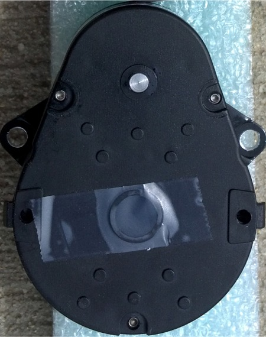
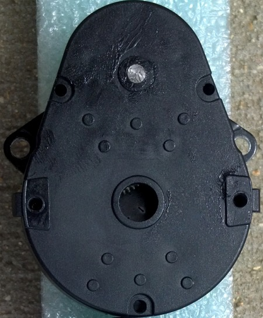
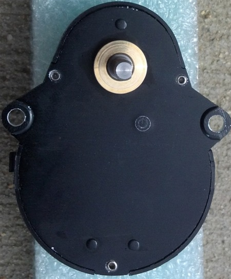
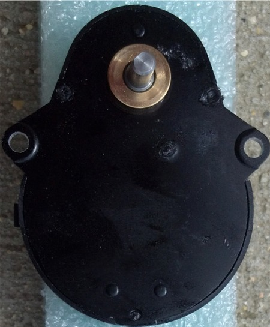

| Losmandy's New Gearbox |
| Losmandy has modified the gearboxes to make the stronger. They have replaced the plastic dimples with metal rivets that extend all the way through the gearboxes to hold them together. |
| Motor side of Gearboxes. |
|  |  |
| New Gearbox is on left, Old gearbox in on right side. |
| Worm side of Gearboxes. |
|  |  |
| New Gearbox is on left, Old gearbox in on right side. |
| Pictures courtesy of John Grant |